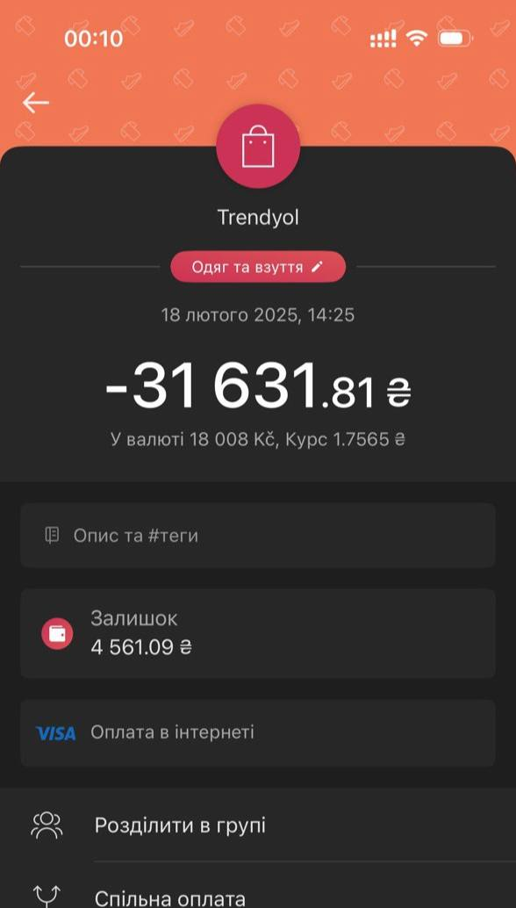

Я впевнений, що кожен знає як появився реф у мене в житті. Чому ця
ніша немає великих надій? Почнемо напевно з Тренду, це той випадок
коли реально везіння, щоб такий шоп був і жив довгий час - 1:10000
шопів, якщо не менший шанс + метод як він робився і дроп який був,
це все зіграло дуже на руку, ніби зірки вистроїлись в один ряд.
Було ясно що це закінчиться рано чи пізно, питання коли і
найголовніше - чи буде подібний шоп. Скажу - ні. Та, це рідкість
що такий шоп існував, зараз все набагато важче. Під словами
"набагато важче" я маю на увазі що не завжди вийде реф, не завжди
спрацює метод, не завжди оплатиться товар, не завжди буде карти
для оплат і тд. Дуже багато чинників, які сильно впливають на
успішний реф. Які дуже пов'язані один з одним.
Одний сценарій коли ти просто для себе щось робиш і не на основні
гроші, інший сценарій коли робиш під замолвення і з обмеженим
бюджетом і часом. Ось тут і стається те що називається -
розчарування. Скупи дають від сили 60%, методи працюють 3 в 1 (3
успішні : 1 не успіх), дропи довго приймають, перевоз все плутає,
губляться речі, не працюють боксери - і за це все в хорошому
випадку маєш прибуток в 15-30% від суми яку вклав, за місяць часу
в хорошому випадку. Чи це класно? Рахуйте самі.
Якщо думаєте, що проблема в шопах - ні. Найбільша проблема в
людях, з якими ти працюєш і вимушений довірити свої кошти, чи
кошти інших людей.
Ніша, яка немає розвитку і великих надій
